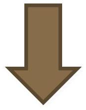
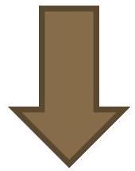

Newborn Resuscitation
Resuscitation at the time of delivery
saving children's lives
Emergency Triage Assessement and Treatment plus admission KEMRI Wellcome Trust
Objectives
- To outline the optimum approach to newborn resuscitation.
- To present global best practice guidelines.
Introduction
- Passage through the birth canal is a hypoxic experience for the foetus.
- This is because significant respiratory exchange at the placenta is prevented for the 50-75 s duration of the average contraction.
Babies & warmth
- Newborn babies are fluid covered, they lose heat through:
- Evaporation
- Convection
- Conduction
Cont..
- If a baby gets cold it:
- Switches off surfactant production
- Increases energy (glucose) requirement thus there is risk of hypoglycemia
- So we must keep them warm and dry
Anticipate resuscitation if:
- Mother has had a chronic illness
- Mother had a previous fetal or neonatal death
- Mother with pre-eclampsia, in multiple pregnancies, in preterm delivery.
- In abnormal presentation of the fetus, infants with a prolapsed cord
Cont..
- Prolonged labour, prolonged rupture of membranes or meconium-stained liquor.
NB: For many infants, resuscitation cannot be anticipated before delivery therefore be prepared to resuscitate at every delivery.
Preparedness for Newborn resuscitation I; equipment
Needed for all resuscitations - ready in advance!
- Warm environment - Overhead warmer
- Warm dry towels
- Firm stable surface & Lighting
- Bag Valve Mask device (not damaged)
- Wide bore sucker
- Oxygen- room air is adequate for immediate resuscitation
- Clock
Preparedness for Newborn resuscitation II
- The team:
NB: team preparation and role assignment.
- The team leader should have full resuscitation skills
- Members: each with defined roles
- Assistance: to be sent if need arises
CONT...
- Focus on history: to anticipate resuscitation
- Team briefing and role assignment
- Prepare the mother,self and environment (clean, warm, well lit)
- Equipment check
Evaluation of the newborn
- At all births, preparation is needed to:
- prevent heat loss
- intervene in an appropriate and timely manner if indicated
Why do babies need resuscitation - what is the main problem?
Main problem
- Failure to initiate and sustain breathing
- So we must breath for them within the first minute of life.
Interventions required by
newborns at Birth
Assessment at birth and routine care
Chest compressions, medications
Newborn resuscitation - no meconium
Dry and Stimulate
Cry / Breathing / Activity?
Newborn resuscitation - no meconium (Airway)
Drying,keeping the baby warm and assessment
- Dry the baby, remove the wet towels, and cover the baby with dry towels.
- Assess tone, breathing, and heart rate
- Maintain warmth with aim being temperature of $36.5^\circ - 37.5^\circ C$
- Reassess these observations regularly every 1 min or so throughout the resuscitation process but it is the heart rate which is the key observation.
Newborn resuscitation - no meconium (Breathing)
Check Airway - clear if required - and check Breathing
Call for help
Initiate ventilation and continue ventilation at 30breaths/min for 60 seconds (Person Two): Feel for HR
How to ventilate with bag and mask
- Position the head in neutral position
- Position the mask on the face
- Firm seal between the mask and the face
- Squeeze bag to produce a gentle movement of the chest
- Give 30-50 breaths per
minute.
Newborn resuscitation - no meconium
Initiate and continue ventilation at 30/min for 60 seconds making sure the chest rises Then Feel for HR: if >60/min
 60 / min indicator" class="content-image">Heart Rate > 60 / min
Continue ventilation for 1 minute
Reassess ABC
Newborn resuscitation - no meconium (Circulation)
Initiate and continue ventilation at 30/min for 60 seconds Then: Feel for HR and see if <60/min
Heart Rate < 60 / min
Give 1 ventilation Then: Give 3 chest compressions Give 3 compressions : 1 breath for
Reassess ABC 30 cycles in 1 minute
Alveoli before and after successful inflation
The chest must rise with BVM
Resuscitation - Step 4 - Circulation
- Compress over sternum 1 finger-breadth below nipple line, $1 / 3^{rd}$ the depth of the chest
What about meconium?
- If the baby has already cried then do not suction unless there is something in the airway
- If the baby has never taken a gasp / cried then check the airway before drying and suction the oropharynx 'to where you can see' and then dry the baby
- Routine suction of the lower airway is not recommended
- If there is no meconium then the first action is to dry the baby
Drugs and Oxygen (1)
- Immediate resuscitation with oxygen can cause harm.
- About $1 / 4$ of resuscitated babies may need oxygen after 4-5 minutes of resuscitation.
- Priority is ventilation - do not stop resuscitation to look for oxygen.
- Drugs are not recommended
- No sodium bicarbonate / aminophylline / hydrocortisone / 50\%dextrose!
For the hospital providing advanced care Laryngoscope, ET tubes (sizes 2.0 to 4.0), Scissors and tape Drugs-Adrenaline, IVF (Volume)
Drugs
- Drugs are needed rarely and only if there is no significant cardiac output (<60/min) despite effective lung inflation and chest compression.
- The drugs used include:
- adrenaline (1:10,000)
- dextrose (10\%).
Epinephrine use
- The indication for epinephrine is heart rate below 60 bpm after at least 30 seconds of effective PPV and another 60 seconds of chest compressions using 100\% oxygen.
- The preferred route is IV (or IO if IV access cannot be obtained). One dose may be given through the ETT while awaiting IV access but if no response, it should be followed with an IV dose as soon as access is secured
Ethical considerations
- Indications for initiation or suspension of resuscitation:
- extreme prematurity
- severe congenital abnormalities
- no response to prolonged resuscitative efforts
- Non-initiation of resuscitation at birth considered appropriate in many countries if:
- confirmed GA <23 weeks
- BW <400g
- anencephaly
- confirmed trisomy 13 or 18
Routine care of the new-born
- Warmth: kangaroo mother care for the preterms, heaters and extra blankets
- Vitamin K injection
- Cord care: clean with 7.1\% Chlohexidine once per day
- Eye care: tetracycline eye ointment
- Breast feeding: within 30 minutes of birth
Septic cord
QUESTIONS?
Summary
- Keep the newborn warm
- Correct management of Airway and Breathing will save most babies.
- When doing newborn ventilation-Make sure the chest moves!